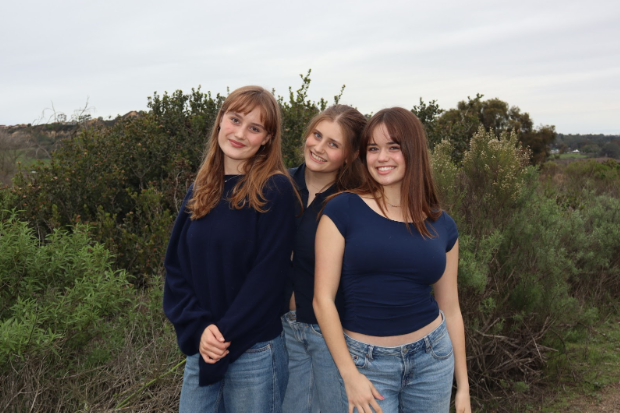
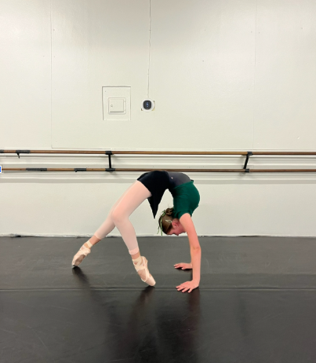
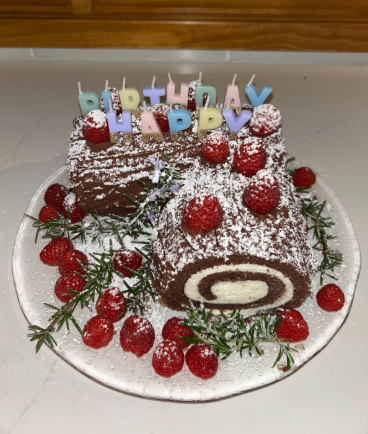

I’m Anni Geierstanger, a current Junior at CCA who loves to spend time with those whom I love. I was born in San Diego as the youngest of three girls (current ages 19 and 22). I have a lot of family connections in Germany as my father immigrated to America from Germany. I have learned so much from every member of my family from my mom to my dog, Balu. Besides my family I have a lot of great relationships with friends spending lots of time at Fletcher Cove, One Paseo, and each other's houses.
At 4 years old I began to dance and it has become an integral part of my life since then. I began by doing a range of styles: jazz, ballet, lyrical, contemporary, and tap competing for three years as a young child. I then moved to my studio Ballet Arte in Solana Beach where I focused on ballet. I competed in ballet competitions and performed in biannual performances. My sophomore year I started dancing at CCA's Dance Conservatory, where I have since performed in 4 different shows and gotten the opportunity to choreograph.
Besides dance I have many other hobbies I thoroughly enjoy. Notably: cooking and reading. During the Covid-19 pandemic I spent hours in the kitchen practicing frying vegetables, mixing batter, and chopping ingredients to make food galore. It has since become one of my favorite activities. One of my favorite things to cook is Ableskeviers. I also love to read! Some of my favorite books are: My Friends, Hunger Games, Lessons in Chemistry, and Project Hail Mary. I also love spending time at the beach.